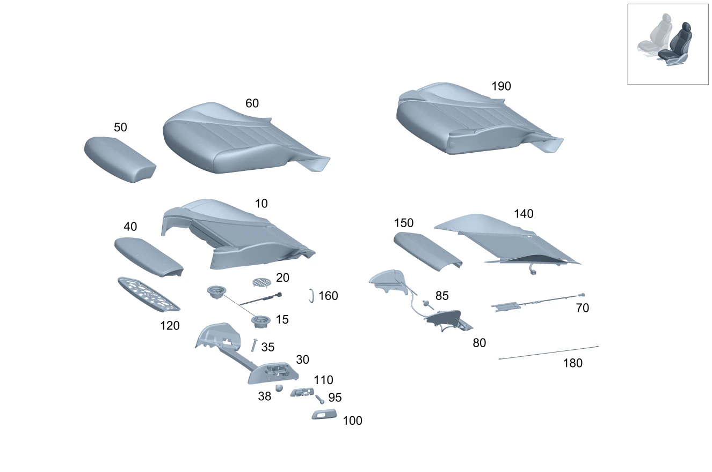

| № | Артикул | Название | Кол. | Примечание | Ограничение |
|---|---|---|---|---|---|
| 10 | A 205 910 76 16 | Подкладка подушки сиденья (PADDING, FRT. SEAT CUSH.) | 1 | 220A | |
| 10 | A 205 910 76 16 | Подкладка подушки сиденья (PADDING, FRT. SEAT CUSH.) | 1 | Рулевое управление: Влево | 220A/500A |
| 10 | A 205 910 76 16 | Подкладка подушки сиденья (PADDING, FRT. SEAT CUSH.) | 1 | Рулевое управление: Вправо | 220A/500A |
| 10 | A 205 910 76 16 | Подкладка подушки сиденья (PADDING, FRT. SEAT CUSH.) | 1 | Рулевое управление: Влево | (220A/500A)+221+(494/460) |
| 10 | A 205 910 76 16 | Подкладка подушки сиденья (PADDING, FRT. SEAT CUSH.) | 1 | Рулевое управление: Вправо | (220A/500A)+221+(494/460) |
| 10 | A 205 910 77 16 | Подкладка подушки сиденья (PADDING, FRT. SEAT CUSH.) | 1 | Рулевое управление: Влево | P65/221/275 |
| 10 | A 205 910 77 16 | Подкладка подушки сиденья (PADDING, FRT. SEAT CUSH.) | 1 | Рулевое управление: Влево | (220A/500A)+(P65/221/275) |
| 10 | A 205 910 77 16 | Подкладка подушки сиденья (PADDING, FRT. SEAT CUSH.) | 1 | Рулевое управление: Влево | 220A+(P65/221/275) |
| 10 | A 205 910 77 16 | Подкладка подушки сиденья (PADDING, FRT. SEAT CUSH.) | 1 | Рулевое управление: Вправо | P65/221/241 |
| 10 | A 205 910 77 16 | Подкладка подушки сиденья (PADDING, FRT. SEAT CUSH.) | 1 | Рулевое управление: Вправо | (220A/500A)+(P65/221/241) |
| 10 | A 205 910 77 16 | Подкладка подушки сиденья (PADDING, FRT. SEAT CUSH.) | 1 | Рулевое управление: Вправо | 220A+(P65/221/241) |
| 10 | A 205 910 76 16 | Подкладка подушки сиденья (PADDING, FRT. SEAT CUSH.) | 1 | Рулевое управление: Влево | (250A/610A/800A/850A/965A) |
| 10 | A 205 910 76 16 | Подкладка подушки сиденья (PADDING, FRT. SEAT CUSH.) | 1 | Рулевое управление: Вправо | (250A/610A/800A/850A/965A) |
| 10 | A 205 910 76 16 | Подкладка подушки сиденья (PADDING, FRT. SEAT CUSH.) | 1 | Рулевое управление: Влево | (250A/610A/800A/850A/965A)+221+(494/460) |
| 10 | A 205 910 77 16 | Подкладка подушки сиденья (PADDING, FRT. SEAT CUSH.) | 1 | Рулевое управление: Влево | (250A/610A/800A/850A/965A)+(P65/221/275) |
| 10 | A 205 910 78 16 | Подкладка подушки сиденья (PADDING, FRT. SEAT CUSH.) | 1 | Рулевое управление: Влево | (250A/610A/800A/850A/965A)+401 |
| 10 | A 205 910 78 16 | Подкладка подушки сиденья (PADDING, FRT. SEAT CUSH.) | 1 | Рулевое управление: Вправо | (250A/610A/800A/850A/965A)+401 |
| 10 | A 205 910 78 16 | Подкладка подушки сиденья (PADDING, FRT. SEAT CUSH.) | 1 | Рулевое управление: Влево | (250A/610A/800A/850A/965A)+221+(494/460)+401 |
| 10 | A 205 910 79 16 | Подкладка подушки сиденья (PADDING, FRT. SEAT CUSH.) | 1 | Рулевое управление: Влево | (250A/610A/800A/850A/965A)+(P65/221/275)+401 |
| 10 | A 205 910 87 16 | Подкладка подушки сиденья (PADDING, FRT. SEAT CUSH.) | 1 | Рулевое управление: Влево | |
| 10 | A 205 910 87 16 | Подкладка подушки сиденья (PADDING, FRT. SEAT CUSH.) | 1 | Рулевое управление: Вправо | |
| 10 | A 205 910 76 16 | Подкладка подушки сиденья (PADDING, FRT. SEAT CUSH.) | 1 | 220A+221+(494/460) | |
| 10 | A 205 910 87 16 | Подкладка подушки сиденья (PADDING, FRT. SEAT CUSH.) | 1 | Рулевое управление: Влево | 221+(494/460) |
| 10 | A 205 910 87 16 | Подкладка подушки сиденья (PADDING, FRT. SEAT CUSH.) | 1 | Рулевое управление: Вправо | 221+(494/460) |
| 10 | A 205 910 88 16 | Подкладка подушки сиденья (PADDING, FRT. SEAT CUSH.) | 1 | Рулевое управление: Влево | P65/221/275 |
| 10 | A 205 910 88 16 | Подкладка подушки сиденья (PADDING, FRT. SEAT CUSH.) | 1 | Рулевое управление: Вправо | P65/221/241 |
| 10 | A 205 910 78 16 | Подкладка подушки сиденья (PADDING, FRT. SEAT CUSH.) | 1 | 220A+401 | |
| 10 | A 205 910 78 16 | Подкладка подушки сиденья (PADDING, FRT. SEAT CUSH.) | 1 | Рулевое управление: Влево | (220A/500A)+401 |
| 10 | A 205 910 78 16 | Подкладка подушки сиденья (PADDING, FRT. SEAT CUSH.) | 1 | Рулевое управление: Вправо | (220A/500A)+401 |
| 10 | A 205 910 78 16 | Подкладка подушки сиденья (PADDING, FRT. SEAT CUSH.) | 1 | 221+(494/460)+401+220A | |
| 10 | A 205 910 78 16 | Подкладка подушки сиденья (PADDING, FRT. SEAT CUSH.) | 1 | Рулевое управление: Влево | 221+(494/460)+401+(220A/500A) |
| 10 | A 205 910 78 16 | Подкладка подушки сиденья (PADDING, FRT. SEAT CUSH.) | 1 | Рулевое управление: Вправо | 221+(494/460)+401+(220A/500A) |
| 10 | A 205 910 79 16 | Подкладка подушки сиденья (PADDING, FRT. SEAT CUSH.) | 1 | Рулевое управление: Влево | (P65/221/275)+401 |
| 10 | A 205 910 79 16 | Подкладка подушки сиденья (PADDING, FRT. SEAT CUSH.) | 1 | Рулевое управление: Влево | (P65/221/275)+401+(220A/500A) |
| 10 | A 205 910 79 16 | Подкладка подушки сиденья (PADDING, FRT. SEAT CUSH.) | 1 | Рулевое управление: Влево | (P65/221/275)+401+220A |
| 10 | A 205 910 79 16 | Подкладка подушки сиденья (PADDING, FRT. SEAT CUSH.) | 1 | Рулевое управление: Вправо | (P65/221/241)+401 |
| 10 | A 205 910 79 16 | Подкладка подушки сиденья (PADDING, FRT. SEAT CUSH.) | 1 | Рулевое управление: Вправо | (P65/221/241)+401+(220A/500A) |
| 10 | A 205 910 79 16 | Подкладка подушки сиденья (PADDING, FRT. SEAT CUSH.) | 1 | Рулевое управление: Вправо | (P65/221/241)+401+220A |
| 10 | A 205 910 76 16 | Подкладка подушки сиденья (PADDING, FRT. SEAT CUSH.) | 1 | (250A/610A/800A/850A) | |
| 10 | A 205 910 76 16 | Подкладка подушки сиденья (PADDING, FRT. SEAT CUSH.) | 1 | Рулевое управление: Влево | (250A/610A/800A/850A)+221+(494/460) |
| 10 | A 205 910 77 16 | Подкладка подушки сиденья (PADDING, FRT. SEAT CUSH.) | 1 | Рулевое управление: Влево | (250A/610A/800A/850A)+(P65/221/275) |
| 10 | A 205 910 37 02 | 1 | Рулевое управление: Вправо | (250A/610A/800A/850A/965A)+U10 | |
| 10 | A 205 910 37 02 | 1 | Рулевое управление: Вправо | (250A/610A/800A/850A)+U10 | |
| 10 | A 205 910 38 02 | 1 | Рулевое управление: Вправо | (250A/610A/800A/850A/965A)+401+U10 | |
| 10 | A 205 910 38 02 | 1 | Рулевое управление: Вправо | (250A/610A/800A/850A)+401+U10 | |
| 10 | A 205 910 12 50 | 1 | Рулевое управление: Вправо | (250A/610A/800A/850A/965A)+(P65/221/241)+U10 | |
| 10 | A 205 910 12 50 | 1 | Рулевое управление: Вправо | (250A/610A/800A/850A)+(P65/221/241)+U10 | |
| 10 | A 205 910 16 50 | 1 | Рулевое управление: Вправо | (250A/610A/800A/850A/965A)+(P65/221/241)+401+U10 | |
| 10 | A 205 910 16 50 | 1 | Рулевое управление: Вправо | (250A/610A/800A/850A)+(P65/221/241)+401+U10 | |
| 10 | A 205 910 78 16 | Подкладка подушки сиденья (PADDING, FRT. SEAT CUSH.) | 1 | (250A/610A/800A/850A)+401 | |
| 10 | A 205 910 78 16 | Подкладка подушки сиденья (PADDING, FRT. SEAT CUSH.) | 1 | Рулевое управление: Влево | (250A/610A/800A/850A)+221+(494/460)+401 |
| 10 | A 205 910 79 16 | Подкладка подушки сиденья (PADDING, FRT. SEAT CUSH.) | 1 | Рулевое управление: Влево | (250A/610A/800A/850A)+(P65/221/275)+401 |
| 10 | A 253 910 71 04 | Подкладка подушки сиденья (PADDING, FRT. SEAT CUSH.) | 1 | Рулевое управление: Влево | 555 |
| 10 | A 253 910 71 04 | Подкладка подушки сиденья (PADDING, FRT. SEAT CUSH.) | 1 | Рулевое управление: Вправо | 555 |
| 15 | A 099 906 03 02 | - Вентилятор (FAN) | 1 | Левое сиденье Рулевое управление: Влево | 401 |
| 15 | A 099 906 03 02 | - Вентилятор (FAN) | 1 | Левое сиденье Рулевое управление: Вправо | 401 |
| 20 | A 220 914 00 36 | - Крышка (COVER) | 2 | Вентилятор Рулевое управление: Влево | 401 |
| 20 | A 220 914 00 36 | - Крышка (COVER) | 2 | Вентилятор Рулевое управление: Вправо | 401 |
| 30 | A 253 910 51 09 | Усиливающий элемент (STIFFENER) | 1 | Левое сиденье | 555 |
| 35 | A 001 984 66 29 | Болт с головкой торкс (HEXALOBULAR BOLT) | 2 | Крепление элемента жёсткости левого сиденья; 5X30 | 555 |
| 38 | A 001 990 43 10 | Винт с сфероцил. головкой (PAN HEAD SCREW) | 4 | Крепление элемента жёсткости левого сиденья; 5X10 | 555 |
| 40 | A 205 910 94 22 | Подкладка подушки сиденья (PADDING, FRT. SEAT CUSH.) | 1 | Спереди Рулевое управление: Влево | P65/221/275 |
| 40 | A 205 910 94 22 | Подкладка подушки сиденья (PADDING, FRT. SEAT CUSH.) | 1 | Спереди Рулевое управление: Вправо | P65/221/241 |
| 40 | A 253 910 37 05 | Подкладка подушки сиденья (PADDING, FRT. SEAT CUSH.) | 1 | Спереди Рулевое управление: Влево | 555 |
| 40 | A 253 910 37 05 | Подкладка подушки сиденья (PADDING, FRT. SEAT CUSH.) | 1 | Спереди Рулевое управление: Вправо | 555 |
| 50 | A 205 910 69 13 | Обивка подушки сиденья (OUTER COVER, SEAT CUSHION) | 1 | Регулировка длины подушки сиденья Рулевое управление: Влево | 220A+(P65/221/275) |
| 50 | A 205 910 69 13 | Обивка подушки сиденья (OUTER COVER, SEAT CUSHION) | 1 | Регулировка длины подушки сиденья Рулевое управление: Вправо | 220A+(P65/221/241) |
| 50 | A 205 910 70 13 | Обивка подушки сиденья (OUTER COVER, SEAT CUSHION) | 1 | Регулировка длины подушки сиденья Рулевое управление: Влево | 220A+(P65/221/275)+401 |
| 50 | A 205 910 70 13 | Обивка подушки сиденья (OUTER COVER, SEAT CUSHION) | 1 | Регулировка длины подушки сиденья Рулевое управление: Вправо | 220A+(P65/221/241)+401 |
| 50 | A 205 910 09 38 | Обивка подушки сиденья (OUTER COVER, SEAT CUSHION) | 1 | Регулировка длины подушки сиденья Рулевое управление: Влево | (101A/161A)+(P65/221/275) |
| 50 | A 205 910 09 38 | Обивка подушки сиденья (OUTER COVER, SEAT CUSHION) | 1 | Регулировка длины подушки сиденья Рулевое управление: Вправо | (101A/161A)+(P65/221/241) |
| 50 | A 253 910 77 01 | Обивка подушки сиденья (OUTER COVER, SEAT CUSHION) | 1 | Регулировка длины подушки сиденья Рулевое управление: Влево | 630A+(P65/221/275) |
| 50 | A 253 910 77 01 | Обивка подушки сиденья (OUTER COVER, SEAT CUSHION) | 1 | Регулировка длины подушки сиденья Рулевое управление: Вправо | 630A+(P65/221/241) |
| 50 | A 253 910 16 03 | Обивка подушки сиденья (OUTER COVER, SEAT CUSHION) | 1 | Регулировка длины подушки сиденья Рулевое управление: Влево | 297A+(P65/221/275) |
| 50 | A 253 910 16 03 | Обивка подушки сиденья (OUTER COVER, SEAT CUSHION) | 1 | Регулировка длины подушки сиденья Рулевое управление: Вправо | 297A+(P65/221/241) |
| 50 | A 205 910 59 10 | Обивка подушки сиденья (OUTER COVER, SEAT CUSHION) | 1 | Регулировка длины подушки сиденья | 500A |
| 50 | A 205 910 59 10 | Обивка подушки сиденья (OUTER COVER, SEAT CUSHION) | 1 | Регулировка длины подушки сиденья | 861A |
| 50 | A 205 910 27 13 | Обивка подушки сиденья (OUTER COVER, SEAT CUSHION) | 1 | Регулировка длины подушки сиденья Рулевое управление: Влево | 610A+(P65/275) |
| 50 | A 205 910 27 13 | Обивка подушки сиденья (OUTER COVER, SEAT CUSHION) | 1 | Регулировка длины подушки сиденья Рулевое управление: Вправо | 610A+(P65/241) |
| 50 | A 205 910 28 13 | Обивка подушки сиденья (OUTER COVER, SEAT CUSHION) | 1 | Регулировка длины подушки сиденья Рулевое управление: Влево | 250A+241A+275 |
| 50 | A 205 910 28 13 | Обивка подушки сиденья (OUTER COVER, SEAT CUSHION) | 1 | Регулировка длины подушки сиденья Рулевое управление: Вправо | 250A+241A+241 |
| 50 | A 205 910 29 13 | Обивка подушки сиденья | 1 | Регулировка длины подушки сиденья Рулевое управление: Влево | (800A/850A)+275 |
| 50 | A 205 910 29 13 | Обивка подушки сиденья | 1 | Регулировка длины подушки сиденья Рулевое управление: Вправо | (800A/850A)+241 |
| 50 | A 205 910 31 33 | Обивка подушки сиденья (OUTER COVER, SEAT CUSHION) | 1 | Регулировка длины подушки сиденья | 555+250A+241A |
| 50 | A 205 910 34 33 | Обивка подушки сиденья | 1 | Регулировка длины подушки сиденья | 555+610A |
| 50 | A 205 910 36 33 | Обивка подушки сиденья | 1 | Регулировка длины подушки сиденья | 555+800A |
| 50 | A 205 910 37 33 | Обивка подушки сиденья | 1 | Регулировка длины подушки сиденья | 555+800A+811A |
| 50 | A 205 910 38 33 | Обивка подушки сиденья | 1 | Регулировка длины подушки сиденья | 555+850A |
| 50 | A 205 910 92 38 | Обивка подушки сиденья (OUTER COVER, SEAT CUSHION) | 1 | Регулировка длины подушки сиденья | 555+850A+858A |
| 50 | A 253 910 37 04 | Обивка подушки сиденья (OUTER COVER, SEAT CUSHION) | 1 | Регулировка длины подушки сиденья | 555+(961A/965A/861A) |
| 50 | A 205 910 09 38 | Обивка подушки сиденья (OUTER COVER, SEAT CUSHION) | 1 | Регулировка длины подушки сиденья Рулевое управление: Влево | 100A+(P65/221/275) |
| 50 | A 205 910 09 38 | Обивка подушки сиденья (OUTER COVER, SEAT CUSHION) | 1 | Регулировка длины подушки сиденья Рулевое управление: Вправо | 100A+(P65/221/241) |
| 50 | A 253 910 46 10 | Обивка подушки сиденья (OUTER COVER, SEAT CUSHION) | 1 | Регулировка длины подушки сиденья Рулевое управление: Влево | 197A+(P65/221/275) |
| 50 | A 253 910 46 10 | Обивка подушки сиденья (OUTER COVER, SEAT CUSHION) | 1 | Регулировка длины подушки сиденья Рулевое управление: Вправо | 197A+(P65/221/241) |
| 50 | A 253 910 53 04 | Обивка подушки сиденья (OUTER COVER, SEAT CUSHION) | 1 | Регулировка длины подушки сиденья Рулевое управление: Влево | 300A+301A+(P65/221/275) |
| 50 | A 253 910 53 04 | Обивка подушки сиденья (OUTER COVER, SEAT CUSHION) | 1 | Регулировка длины подушки сиденья Рулевое управление: Вправо | 300A+301A+(P65/221/241) |
| 50 | A 253 910 52 04 | Обивка подушки сиденья (OUTER COVER, SEAT CUSHION) | 1 | Регулировка длины подушки сиденья Рулевое управление: Влево | 650A+651A+(P65/221/275) |
| 50 | A 253 910 52 04 | Обивка подушки сиденья (OUTER COVER, SEAT CUSHION) | 1 | Регулировка длины подушки сиденья Рулевое управление: Вправо | 650A+651A+(P65/221/241) |
| 60 | A 205 910 09 46 | Обивка подушки сиденья (OUTER COVER, SEAT CUSHION) | 1 | Левое сиденье | 100A |
| 60 | A 205 910 09 46 | Обивка подушки сиденья (OUTER COVER, SEAT CUSHION) | 1 | Левое сиденье | 100A+221+(460/494) |
| 60 | A 205 910 10 46 | Обивка подушки сиденья (OUTER COVER, SEAT CUSHION) | 1 | Левое сиденье Рулевое управление: Влево | 100A+(P65/221/275) |
| 60 | A 205 910 10 46 | Обивка подушки сиденья (OUTER COVER, SEAT CUSHION) | 1 | Левое сиденье Рулевое управление: Вправо | 100A+(P65/221/241) |
| 60 | A 205 910 19 42 | Обивка подушки сиденья (OUTER COVER, SEAT CUSHION) | 1 | Левое сиденье Рулевое управление: Влево | (101A/161A)+(P65/221/275) |
| 60 | A 205 910 19 42 | Обивка подушки сиденья (OUTER COVER, SEAT CUSHION) | 1 | Левое сиденье Рулевое управление: Вправо | (101A/161A)+(P65/221/241) |
| 60 | A 253 910 45 10 | Обивка подушки сиденья (OUTER COVER, SEAT CUSHION) | 1 | Левое сиденье | 197A |
| 60 | A 253 910 72 06 | Обивка подушки сиденья (OUTER COVER, SEAT CUSHION) | 1 | Левое сиденье Рулевое управление: Влево | 197A |
| 60 | A 253 910 72 06 | Обивка подушки сиденья (OUTER COVER, SEAT CUSHION) | 1 | Левое сиденье Рулевое управление: Вправо | 197A |
| 60 | A 253 910 45 10 | Обивка подушки сиденья (OUTER COVER, SEAT CUSHION) | 1 | Левое сиденье | 197A+221+(460/494) |
| 60 | A 253 910 72 06 | Обивка подушки сиденья (OUTER COVER, SEAT CUSHION) | 1 | Левое сиденье Рулевое управление: Влево | 197A+221+(460/494) |
| 60 | A 253 910 72 06 | Обивка подушки сиденья (OUTER COVER, SEAT CUSHION) | 1 | Левое сиденье Рулевое управление: Вправо | 197A+221+(460/494) |
| 60 | A 253 910 71 06 | Обивка подушки сиденья (OUTER COVER, SEAT CUSHION) | 1 | Левое сиденье Рулевое управление: Влево | 197A+(P65/221/275) |
| 60 | A 253 910 44 10 | Обивка подушки сиденья (OUTER COVER, SEAT CUSHION) | 1 | Левое сиденье Рулевое управление: Влево | 197A+(P65/221/275) |
| 60 | A 253 910 44 10 | Обивка подушки сиденья (OUTER COVER, SEAT CUSHION) | 2 | Левое сиденье Рулевое управление: Вправо | 197A+(P65/221/241) |
| 60 | A 253 910 25 00 | Обивка подушки сиденья (OUTER COVER, SEAT CUSHION) | 1 | Левое сиденье | 300A |
| 60 | A 253 910 25 00 | Обивка подушки сиденья (OUTER COVER, SEAT CUSHION) | 1 | Левое сиденье | 300A+221+(460/494) |
| 60 | A 253 910 27 00 | Обивка подушки сиденья (OUTER COVER, SEAT CUSHION) | 1 | Левое сиденье Рулевое управление: Влево | 300A+(P65/221/275) |
| 60 | A 253 910 27 00 | Обивка подушки сиденья (OUTER COVER, SEAT CUSHION) | 1 | Левое сиденье Рулевое управление: Вправо | 300A+(P65/221/241) |
| 60 | A 205 910 89 00 | Обивка подушки сиденья | 1 | Левое сиденье | 220A |
| 60 | A 205 910 89 00 | Обивка подушки сиденья | 1 | Левое сиденье | 220A+221+(460/494) |
| 60 | A 205 910 97 00 | Обивка подушки сиденья (OUTER COVER, SEAT CUSHION) | 1 | Левое сиденье Рулевое управление: Влево | 220A+(P65/221/275) |
| 60 | A 205 910 97 00 | Обивка подушки сиденья (OUTER COVER, SEAT CUSHION) | 1 | Левое сиденье Рулевое управление: Вправо | 220A+(P65/221/241) |
| 60 | A 205 910 99 00 | Обивка подушки сиденья (OUTER COVER, SEAT CUSHION) | 1 | Левое сиденье | 220A+401 |
| 60 | A 205 910 99 00 | Обивка подушки сиденья (OUTER COVER, SEAT CUSHION) | 1 | Левое сиденье | 220A+221+(460/494)+401 |
| 60 | A 205 910 00 01 | Обивка подушки сиденья (OUTER COVER, SEAT CUSHION) | 1 | Левое сиденье Рулевое управление: Влево | 220A+(P65/221/275)+401 |
| 60 | A 205 910 00 01 | Обивка подушки сиденья (OUTER COVER, SEAT CUSHION) | 1 | Левое сиденье Рулевое управление: Вправо | 220A+(P65/221/241)+401 |
| 60 | A 253 910 11 03 | Обивка подушки сиденья (OUTER COVER, SEAT CUSHION) | 1 | Левое сиденье | 297A |
| 60 | A 253 910 11 03 | Обивка подушки сиденья (OUTER COVER, SEAT CUSHION) | 1 | Левое сиденье | 297A+221+(460/494) |
| 60 | A 253 910 12 03 | Обивка подушки сиденья (OUTER COVER, SEAT CUSHION) | 1 | Левое сиденье Рулевое управление: Влево | 297A+(P65/221/275) |
| 60 | A 253 910 12 03 | Обивка подушки сиденья (OUTER COVER, SEAT CUSHION) | 1 | Левое сиденье Рулевое управление: Вправо | 297A+(P65/221/241) |
| 60 | A 205 910 22 25 | Обивка подушки сиденья (OUTER COVER, SEAT CUSHION) | 1 | Левое сиденье | 630A |
| 60 | A 205 910 22 25 | Обивка подушки сиденья (OUTER COVER, SEAT CUSHION) | 1 | Левое сиденье | 630A+221+(460/494) |
| 60 | A 205 910 26 25 | Обивка подушки сиденья (OUTER COVER, SEAT CUSHION) | 1 | Левое сиденье Рулевое управление: Влево | 630A+(P65/221/275) |
| 60 | A 205 910 26 25 | Обивка подушки сиденья (OUTER COVER, SEAT CUSHION) | 1 | Левое сиденье Рулевое управление: Вправо | 630A+(P65/221/241) |
| 60 | A 205 910 60 10 | Обивка подушки сиденья (OUTER COVER, SEAT CUSHION) | 1 | Левое сиденье | 965A/975A |
| 60 | A 205 910 62 10 | Обивка подушки сиденья | 1 | Левое сиденье | (965A/975A)+401 |
| 60 | A 205 910 60 10 | Обивка подушки сиденья (OUTER COVER, SEAT CUSHION) | 1 | Левое сиденье | 861A |
| 60 | A 205 910 62 10 | Обивка подушки сиденья | 1 | Левое сиденье | 861A+401 |
| 60 | A 205 910 15 11 | Обивка подушки сиденья (OUTER COVER, SEAT CUSHION) | 1 | Левое сиденье | 961A/971A |
| 60 | A 205 910 21 11 | Обивка подушки сиденья | 1 | Левое сиденье | (961A/971A)+401 |
| 60 | A 205 910 87 12 | Обивка подушки сиденья | 1 | Левое сиденье | 610A+641A |
| 60 | A 205 910 88 12 | Обивка подушки сиденья | 1 | Левое сиденье Рулевое управление: Влево | 610A+641A+(P65/275) |
| 60 | A 205 910 88 12 | Обивка подушки сиденья | 1 | Левое сиденье Рулевое управление: Вправо | 610A+641A+(P65/241) |
| 60 | A 205 910 91 12 | Обивка подушки сиденья | 1 | Левое сиденье Рулевое управление: Влево | 250A+241A+275 |
| 60 | A 205 910 91 12 | Обивка подушки сиденья | 1 | Левое сиденье Рулевое управление: Вправо | 250A+241A+241 |
| 60 | A 205 910 89 11 | Обивка подушки сиденья | 1 | Левое сиденье | 610A |
| 60 | A 205 910 34 06 | Обивка подушки сиденья (OUTER COVER, SEAT CUSHION) | 1 | Левое сиденье | 610A+(P65/275) |
| 60 | A 205 910 90 11 | Обивка подушки сиденья | 1 | Левое сиденье | 610A+621A+(806/807/808/809) |
| 60 | A 205 910 07 08 | Обивка подушки сиденья (OUTER COVER, SEAT CUSHION) | 1 | Левое сиденье | 610A+621A+P65+(806/807/808/809) |
| 60 | A 205 910 37 06 | Обивка подушки сиденья | 1 | Левое сиденье Рулевое управление: Влево | 800A+275 |
| 60 | A 205 910 37 06 | Обивка подушки сиденья | 1 | Левое сиденье Рулевое управление: Вправо | 800A+241 |
| 60 | A 205 910 09 08 | Обивка подушки сиденья (OUTER COVER, SEAT CUSHION) | 1 | Левое сиденье Рулевое управление: Влево | 800A+811A+275 |
| 60 | A 205 910 09 08 | Обивка подушки сиденья (OUTER COVER, SEAT CUSHION) | 1 | Левое сиденье Рулевое управление: Вправо | 800A+811A+241 |
| 60 | A 205 910 36 06 | Обивка подушки сиденья | 1 | Левое сиденье Рулевое управление: Влево | 850A+275 |
| 60 | A 205 910 36 06 | Обивка подушки сиденья | 1 | Левое сиденье Рулевое управление: Вправо | 850A+241 |
| 60 | A 253 910 23 04 | Обивка подушки сиденья (OUTER COVER, SEAT CUSHION) | 1 | Левое сиденье Рулевое управление: Влево | (806/807/808/809)+555+250A+241A |
| 60 | A 253 910 23 04 | Обивка подушки сиденья (OUTER COVER, SEAT CUSHION) | 1 | Левое сиденье Рулевое управление: Вправо | (806/807/808/809)+555+250A+241A |
| 60 | A 253 910 59 07 | Обивка подушки сиденья (OUTER COVER, SEAT CUSHION) | 1 | Левое сиденье Рулевое управление: Влево | 555+250A+241A |
| 60 | A 253 910 59 07 | Обивка подушки сиденья (OUTER COVER, SEAT CUSHION) | 1 | Левое сиденье Рулевое управление: Вправо | 555+250A+241A+-(806/807/808/809) |
| 60 | A 253 910 14 05 | Обивка подушки сиденья | 1 | Левое сиденье Рулевое управление: Влево | (806/807/808/809)+555+610A |
| 60 | A 253 910 14 05 | Обивка подушки сиденья | 1 | Левое сиденье Рулевое управление: Вправо | (806/807/808/809)+555+610A |
| 60 | A 253 910 15 05 | Обивка подушки сиденья (OUTER COVER, SEAT CUSHION) | 1 | Левое сиденье Рулевое управление: Влево | (806/807/808/809)+555+610A+621A |
| 60 | A 253 910 15 05 | Обивка подушки сиденья (OUTER COVER, SEAT CUSHION) | 1 | Левое сиденье Рулевое управление: Вправо | (806/807/808/809)+555+610A+621A |
| 60 | A 253 910 45 05 | Обивка подушки сиденья (OUTER COVER, SEAT CUSHION) | 1 | Левое сиденье Рулевое управление: Влево | (806/807/808/809)+555+275+610A |
| 60 | A 253 910 45 05 | Обивка подушки сиденья (OUTER COVER, SEAT CUSHION) | 1 | Левое сиденье Рулевое управление: Вправо | (806/807/808/809)+555+275+610A |
| 60 | A 253 910 61 08 | Обивка подушки сиденья (OUTER COVER, SEAT CUSHION) | 1 | Левое сиденье Рулевое управление: Влево | 555+610A |
| 60 | A 253 910 61 08 | Обивка подушки сиденья (OUTER COVER, SEAT CUSHION) | 1 | Левое сиденье Рулевое управление: Вправо | 555+610A |
| 60 | A 253 910 65 08 | Обивка подушки сиденья (OUTER COVER, SEAT CUSHION) | 1 | Левое сиденье Рулевое управление: Влево | 555+275+610A |
| 60 | A 253 910 65 08 | Обивка подушки сиденья (OUTER COVER, SEAT CUSHION) | 1 | Левое сиденье Рулевое управление: Вправо | 555+275+610A |
| 60 | A 253 910 60 07 | Обивка подушки сиденья (OUTER COVER, SEAT CUSHION) | 1 | Левое сиденье | 555+800A |
| 60 | A 253 910 61 07 | Обивка подушки сиденья (OUTER COVER, SEAT CUSHION) | 1 | Левое сиденье | 555+800A+811A |
| 60 | A 253 910 62 07 | Обивка подушки сиденья (OUTER COVER, SEAT CUSHION) | 1 | Левое сиденье | 555+850A |
| 60 | A 253 910 85 06 | Обивка подушки сиденья (OUTER COVER, SEAT CUSHION) | 1 | Левое сиденье | 555+850A+858A |
| 60 | A 253 910 64 07 | Обивка подушки сиденья (OUTER COVER, SEAT CUSHION) | 1 | Левое сиденье | 555+965A |
| 60 | A 253 910 31 06 | Обивка подушки сиденья (OUTER COVER, SEAT CUSHION) | 1 | Левое сиденье | 555+961A |
| 60 | A 205 910 18 19 | Обивка подушки сиденья (OUTER COVER, SEAT CUSHION) | 1 | Левое сиденье | (L+100A+101A/R+100A+101A+-U10)+-(P65/221/241/275) |
| 60 | A 205 910 18 19 | Обивка подушки сиденья (OUTER COVER, SEAT CUSHION) | 1 | Левое сиденье | L+100A+101A+221+(460/494)/R+100A+101A+221+(460/494)+-U10 |
| 60 | A 205 910 19 19 | Обивка подушки сиденья (OUTER COVER, SEAT CUSHION) | 1 | Левое сиденье Рулевое управление: Влево | 100A+101A+(P65/221/275) |
| 60 | A 205 910 19 19 | Обивка подушки сиденья (OUTER COVER, SEAT CUSHION) | 1 | Левое сиденье Рулевое управление: Вправо | 100A+101A+(P65/221/241)+-U10 |
| 60 | A 205 910 18 42 | Обивка подушки сиденья (OUTER COVER, SEAT CUSHION) | 1 | Левое сиденье | 100A |
| 60 | A 205 910 18 42 | Обивка подушки сиденья (OUTER COVER, SEAT CUSHION) | 1 | Левое сиденье | 100A+221+(460/494) |
| 60 | A 205 910 19 42 | Обивка подушки сиденья (OUTER COVER, SEAT CUSHION) | 1 | Левое сиденье Рулевое управление: Влево | 100A+(P65/221/275) |
| 60 | A 205 910 19 42 | Обивка подушки сиденья (OUTER COVER, SEAT CUSHION) | 1 | Левое сиденье Рулевое управление: Вправо | 100A+(P65/221/241) |
| 60 | A 253 910 35 02 | Обивка подушки сиденья (OUTER COVER, SEAT CUSHION) | 1 | Левое сиденье | 300A+301A |
| 60 | A 253 910 35 02 | Обивка подушки сиденья (OUTER COVER, SEAT CUSHION) | 1 | Левое сиденье | 300A+301A+221+(460/494) |
| 60 | A 253 910 36 02 | Обивка подушки сиденья (OUTER COVER, SEAT CUSHION) | 1 | Левое сиденье Рулевое управление: Влево | 300A+301A+(P65/221/275) |
| 60 | A 253 910 36 02 | Обивка подушки сиденья (OUTER COVER, SEAT CUSHION) | 1 | Левое сиденье Рулевое управление: Вправо | 300A+301A+(P65/221/241) |
| 60 | A 253 910 37 02 | Обивка подушки сиденья (OUTER COVER, SEAT CUSHION) | 1 | Левое сиденье | 650A+651A |
| 60 | A 253 910 37 02 | Обивка подушки сиденья (OUTER COVER, SEAT CUSHION) | 1 | Левое сиденье | 650A+651A+221+(460/494) |
| 60 | A 253 910 38 02 | Обивка подушки сиденья (OUTER COVER, SEAT CUSHION) | 1 | Левое сиденье Рулевое управление: Влево | 650A+651A+(P65/221/275) |
| 60 | A 253 910 38 02 | Обивка подушки сиденья (OUTER COVER, SEAT CUSHION) | 1 | Левое сиденье Рулевое управление: Вправо | 650A+651A+(P65/221/241) |
| 60 | A 253 910 44 10 | Обивка подушки сиденья (OUTER COVER, SEAT CUSHION) | 1 | Левое сиденье Рулевое управление: Влево | 197A+(P65/221/275) |
| 70 | A 205 820 29 02 | Контактный мат (SENSOR MAT) | 1 | Система распознавания занятости сиденья Рулевое управление: Вправо | |
| 80 | A 205 910 30 26 | Регулировка сиденья (SEAT ADJUSTMENT) | 1 | Левое сиденье | 555+275 |
| 85 | A 003 990 36 97 | Вытяжная заклепка (BLIND RIVET) | 6 | Крепление механизма регулировки сиденья | 555 |
| 95 | N 000000 008316 | Винт с 6-гр. глвк (HEXALOBULAR SCREW) | 3 | Крепление блока переключателей; 3X20 | 555+275 |
| 100 | A 205 919 73 00 | Накладка механизма (MOLDING, SEAT ADJUSTMENT) | 1 | Переключатель регулировки контуров | 555+275 |
| 110 | A 205 905 75 05 | Блок выключателей (SWITCH BLOCK) | 1 | Левое сиденье, снаружи | 555+275 |
| 120 | A 000 910 07 26 | Прокладка (UPHOLSTERY PLATE) | 1 | Левое сиденье Рулевое управление: Влево | P65/221/275 |
| 120 | A 000 910 07 26 | Прокладка (UPHOLSTERY PLATE) | 1 | Левое сиденье Рулевое управление: Вправо | P65/221/241 |
| 120 | A 000 910 07 26 | Прокладка (UPHOLSTERY PLATE) | 1 | Левое сиденье Рулевое управление: Влево | 555 |
| 120 | A 000 910 07 26 | Прокладка (UPHOLSTERY PLATE) | 1 | Левое сиденье Рулевое управление: Вправо | 555 |
| 140 | A 205 906 01 06 | Подогрев сидений (SEAT HEATING) | 1 | Сиденье слева, сзади | 873 |
| 140 | A 205 906 01 06 | Подогрев сидений (SEAT HEATING) | 1 | Сиденье слева, сзади | 221+(460/494)+873 |
| 140 | A 205 906 25 00 | Подогрев сидений (SEAT HEATING) | 1 | Сиденье слева, сзади Рулевое управление: Влево | (P65/221/275)+873 |
| 140 | A 205 906 25 00 | Подогрев сидений (SEAT HEATING) | 1 | Сиденье слева, сзади Рулевое управление: Вправо | (P65/221/241)+873 |
| 140 | A 205 906 05 06 | Подогрев сидений (SEAT HEATING) | 1 | Сиденье слева, сзади | 401 |
| 140 | A 205 906 05 06 | Подогрев сидений (SEAT HEATING) | 1 | Сиденье слева, сзади | 221+(460/494)+401 |
| 140 | A 205 906 33 00 | Подогрев сидений (SEAT HEATING) | 1 | Сиденье слева, сзади Рулевое управление: Влево | (P65/221/275)+401 |
| 140 | A 205 906 33 00 | Подогрев сидений (SEAT HEATING) | 1 | Сиденье слева, сзади Рулевое управление: Вправо | (P65/221/241)+401 |
| 140 | A 253 906 43 02 | Подогрев сидений (SEAT HEATING) | 1 | Сиденье слева, сзади | 555+873 |
| 150 | A 205 906 24 00 | Подогрев сидений (SEAT HEATING) | 1 | Сиденье слева, спереди Рулевое управление: Влево | (P65/221/275)+(873/401) |
| 150 | A 205 906 24 00 | Подогрев сидений (SEAT HEATING) | 1 | Сиденье слева, спереди Рулевое управление: Вправо | (P65/221/241)+(873/401) |
| 150 | A 205 906 85 03 | Подогрев сидений (SEAT HEATING) | 1 | Сиденье слева, спереди | 555+873 |
| 160 | A 463 984 00 61 | Крепежная скоба (FASTENING CLIP) | 10 | Левое сиденье | |
| 180 | A 123 924 07 29 | Подвесной хомут | 2 | Сиденье слева; 440 MM Рулевое управление: Влево | |
| 180 | A 123 924 07 29 | Подвесной хомут | 2 | Сиденье слева; 440 MM Рулевое управление: Вправо | |
| 180 | A 123 924 07 29 | Подвесной хомут | 2 | Сиденье слева; 440 MM Рулевое управление: Влево | 221+(460/494) |
| 180 | A 123 924 07 29 | Подвесной хомут | 2 | Сиденье слева; 440 MM Рулевое управление: Вправо | 221+(460/494) |
| 190 | A 205 910 36 20 | Подушка сиденья водителя | 1 | Левое сиденье Рулевое управление: Вправо | 610A+641A+(U10/U10+873) |
| 190 | A 205 910 39 20 | Подушка сиденья водителя | 1 | Левое сиденье Рулевое управление: Вправо | 610A+873+(P65/241)+U10 |
| 190 | A 205 910 40 20 | Подушка сиденья водителя | 1 | Левое сиденье Рулевое управление: Вправо | 610A+(U10/U10+873) |
| 190 | A 253 910 54 04 | Подушка сиденья водителя | 1 | Левое сиденье Рулевое управление: Вправо | (806/807/808/809)+555+610A+U10+-621A |
| 190 | A 253 910 55 04 | Подушка сиденья водителя | 1 | Левое сиденье Рулевое управление: Вправо | (806/807/808/809)+555+610A+873+U10+-621A |
| 190 | A 253 910 38 06 | Подушка сиденья водителя | 1 | Левое сиденье Рулевое управление: Вправо | (806/807/808/809)+555+610A+275+873+U10+-621A |
| 190 | A 253 910 34 09 | Подушка сиденья водителя (DRIVER SEAT CUSHION) | 1 | Левое сиденье Рулевое управление: Вправо | 555+610A+U10 |
| 190 | A 253 910 35 09 | Подушка сиденья водителя (DRIVER SEAT CUSHION) | 1 | Левое сиденье Рулевое управление: Вправо | 555+610A+873+U10 |
| 190 | A 253 910 36 09 | Подушка сиденья водителя (DRIVER SEAT CUSHION) | 1 | Левое сиденье Рулевое управление: Вправо | 555+610A+275+873+U10 |
| 190 | A 253 910 56 04 | Подушка сиденья водителя | 1 | Левое сиденье Рулевое управление: Вправо | 555+610A+621A+U10 |
| 190 | A 253 910 57 04 | Подушка сиденья водителя | 1 | Левое сиденье Рулевое управление: Вправо | 555+610A+621A+873+U10 |
| 190 | A 205 910 41 20 | Подушка сиденья водителя | 1 | Левое сиденье Рулевое управление: Вправо | -555+610A+621A+873+P65+U10 |
| 190 | A 205 910 42 20 | Подушка сиденья водителя | 1 | Левое сиденье Рулевое управление: Вправо | -555+610A+621A+U10/-555+610A+621A+U10+873 |
| 190 | A 205 910 43 20 | Подушка сиденья водителя (DRIVER SEAT CUSHION) | 1 | Левое сиденье Рулевое управление: Вправо | 800A+873+241+U10 |
| 190 | A 205 910 31 31 | Подушка сиденья водителя | 1 | Левое сиденье Рулевое управление: Вправо | 800A+241+U10+401 |
| 190 | A 253 910 58 04 | Подушка сиденья водителя (DRIVER SEAT CUSHION) | 1 | Левое сиденье Рулевое управление: Вправо | (806/807/808/809)+555+800A+241+873+U10+-811A |
| 190 | A 253 910 01 08 | Подушка сиденья водителя (DRIVER SEAT CUSHION) | 1 | Левое сиденье Рулевое управление: Вправо | 555+800A+241+873+U10+-(806/807/808/809/811A) |
| 190 | A 253 910 59 04 | Подушка сиденья водителя | 1 | Левое сиденье Рулевое управление: Вправо | (806/807/808/809)+555+800A+811A+241+873+U10 |
| 190 | A 253 910 02 08 | Подушка сиденья водителя (DRIVER SEAT CUSHION) | 1 | Левое сиденье Рулевое управление: Вправо | 555+800A+811A+241+873+U10+-(806/807/808/809) |
| 190 | A 205 910 44 20 | Подушка сиденья водителя (DRIVER SEAT CUSHION) | 1 | Левое сиденье Рулевое управление: Вправо | 800A+811A+873+241+U10 |
| 190 | A 205 910 33 31 | Подушка сиденья водителя | 1 | Левое сиденье Рулевое управление: Вправо | 800A+811A+241+U10+401 |
| 190 | A 205 910 37 20 | Подушка сиденья водителя | 1 | Левое сиденье Рулевое управление: Вправо | 610A+641A+873+(P65/241)+U10 |
| 190 | A 205 910 38 20 | Подушка сиденья водителя | 1 | Левое сиденье Рулевое управление: Вправо | 250A+241A+873+(221/241)+U10 |
| 190 | A 205 910 30 31 | Подушка сиденья водителя (DRIVER SEAT CUSHION) | 1 | Левое сиденье Рулевое управление: Вправо | 250A+241A+(221/241)+U10+401 |
| 190 | A 253 910 70 04 | Подушка сиденья водителя | 1 | Левое сиденье Рулевое управление: Вправо | 555+250A+241A+241+873+U10+(806/807/808/809) |
| 190 | A 253 910 98 07 | Подушка сиденья водителя (DRIVER SEAT CUSHION) | 1 | Левое сиденье Рулевое управление: Вправо | 555+250A+241A+241+873+U10+-(806/807/808/809) |
| 190 | A 253 910 31 03 | Подушка сиденья водителя (DRIVER SEAT CUSHION) | 1 | Левое сиденье Рулевое управление: Вправо | 300A+U10 |
| 190 | A 253 910 31 03 | Подушка сиденья водителя (DRIVER SEAT CUSHION) | 1 | Левое сиденье Рулевое управление: Вправо | 300A+873+U10 |
| 190 | A 253 910 48 04 | Подушка сиденья водителя (DRIVER SEAT CUSHION) | 1 | Левое сиденье Рулевое управление: Вправо | 300A+301A+U10 |
| 190 | A 253 910 48 04 | Подушка сиденья водителя (DRIVER SEAT CUSHION) | 1 | Левое сиденье Рулевое управление: Вправо | 300A+301A+873+U10 |
| 190 | A 253 910 32 03 | Подушка сиденья водителя (DRIVER SEAT CUSHION) | 1 | Левое сиденье Рулевое управление: Вправо | 300A+(P65/221/241)+U10 |
| 190 | A 253 910 32 03 | Подушка сиденья водителя (DRIVER SEAT CUSHION) | 1 | Левое сиденье Рулевое управление: Вправо | 300A+(P65/221/241)+873+U10 |
| 190 | A 253 910 49 04 | Подушка сиденья водителя (DRIVER SEAT CUSHION) | 1 | Левое сиденье Рулевое управление: Вправо | 300A+301A+(P65/221/241)+U10 |
| 190 | A 253 910 49 04 | Подушка сиденья водителя (DRIVER SEAT CUSHION) | 1 | Левое сиденье Рулевое управление: Вправо | 300A+301A+(P65/221/241)+873+U10 |
| 190 | A 253 910 33 03 | Подушка сиденья водителя (DRIVER SEAT CUSHION) | 1 | Левое сиденье Рулевое управление: Вправо | 650A+U10 |
| 190 | A 253 910 33 03 | Подушка сиденья водителя (DRIVER SEAT CUSHION) | 1 | Левое сиденье Рулевое управление: Вправо | 650A+873+U10 |
| 190 | A 253 910 50 04 | Подушка сиденья водителя (DRIVER SEAT CUSHION) | 1 | Левое сиденье Рулевое управление: Вправо | 650A+651A+U10 |
| 190 | A 253 910 50 04 | Подушка сиденья водителя (DRIVER SEAT CUSHION) | 1 | Левое сиденье Рулевое управление: Вправо | 650A+651A+873+U10 |
| 190 | A 253 910 34 03 | Подушка сиденья водителя (DRIVER SEAT CUSHION) | 1 | Левое сиденье Рулевое управление: Вправо | 650A+(P65/221/241)+U10 |
| 190 | A 253 910 34 03 | Подушка сиденья водителя (DRIVER SEAT CUSHION) | 1 | Левое сиденье Рулевое управление: Вправо | 650A+(P65/221/241)+873+U10 |
| 190 | A 253 910 51 04 | Подушка сиденья водителя (DRIVER SEAT CUSHION) | 1 | Левое сиденье Рулевое управление: Вправо | 650A+651A+(P65/221/241)+U10 |
| 190 | A 253 910 51 04 | Подушка сиденья водителя (DRIVER SEAT CUSHION) | 1 | Левое сиденье Рулевое управление: Вправо | 650A+651A+(P65/221/241)+873+U10 |
| 190 | A 205 910 87 36 | Подушка сиденья водителя | 1 | Левое сиденье Рулевое управление: Вправо | 630A+U10 |
| 190 | A 205 910 87 36 | Подушка сиденья водителя | 1 | Левое сиденье Рулевое управление: Вправо | 630A+873+U10 |
| 190 | A 205 910 89 36 | Подушка сиденья водителя | 1 | Левое сиденье Рулевое управление: Вправо | 630A+(P65/221/241)+U10 |
| 190 | A 205 910 89 36 | Подушка сиденья водителя | 1 | Левое сиденье Рулевое управление: Вправо | 630A+(P65/221/241)+873+U10 |
| 190 | A 205 910 45 20 | Подушка сиденья водителя (DRIVER SEAT CUSHION) | 1 | Левое сиденье Рулевое управление: Вправо | 850A+873+241+U10 |
| 190 | A 253 910 60 04 | Подушка сиденья водителя | 1 | Левое сиденье Рулевое управление: Вправо | (806/807/808/809)+555+850A+241+873+U10 |
| 190 | A 253 910 84 06 | Подушка сиденья водителя | 1 | Левое сиденье Рулевое управление: Вправо | (806/807/808/809)+555+850A+858A+241+873+U10 |
| 190 | A 253 910 03 08 | Подушка сиденья водителя (DRIVER SEAT CUSHION) | 1 | Левое сиденье Рулевое управление: Вправо | 555+850A+241+873+U10+-(806/807/808/809) |
| 190 | A 253 910 84 06 | Подушка сиденья водителя | 1 | Левое сиденье Рулевое управление: Вправо | 555+850A+858A+241+873+U10+-(806/807/808/809) |
| 190 | A 205 910 32 31 | Подушка сиденья водителя | 1 | Левое сиденье Рулевое управление: Вправо | 850A+241+U10+401 |
| 190 | A 205 910 83 30 | Подушка сиденья водителя (DRIVER SEAT CUSHION) | 1 | Левое сиденье Рулевое управление: Вправо | 100A+(101A/161A)+U10 |
| 190 | A 205 910 84 30 | Подушка сиденья водителя | 1 | Левое сиденье Рулевое управление: Вправо | 100A+(101A/161A)+(P65/221/241)+U10 |
| 190 | A 205 910 47 27 | Подушка сиденья водителя | 1 | Левое сиденье Рулевое управление: Вправо | 220A+401+U10 |
| 190 | A 205 910 50 27 | Подушка сиденья водителя (DRIVER SEAT CUSHION) | 1 | Левое сиденье Рулевое управление: Вправо | 220A+(P65/221/241)+401+U10 |
| 190 | A 205 910 48 27 | Подушка сиденья водителя | 1 | Левое сиденье Рулевое управление: Вправо | 220A+873+U10 |
| 190 | A 205 910 48 27 | Подушка сиденья водителя | 1 | Левое сиденье Рулевое управление: Вправо | 220A+U10 |
| 190 | A 205 910 49 27 | Подушка сиденья водителя | 1 | Левое сиденье Рулевое управление: Вправо | 220A+(P65/221/241)+873+U10 |
| 190 | A 205 910 49 27 | Подушка сиденья водителя | 1 | Левое сиденье Рулевое управление: Вправо | 220A+(P65/221/241)+U10 |
| 190 | A 253 910 45 04 | Подушка сиденья водителя (DRIVER SEAT CUSHION) | 1 | Левое сиденье Рулевое управление: Вправо | 297A+U10 |
| 190 | A 253 910 45 04 | Подушка сиденья водителя (DRIVER SEAT CUSHION) | 1 | Левое сиденье Рулевое управление: Вправо | 297A+873+U10 |
| 190 | A 253 910 46 04 | Подушка сиденья водителя (DRIVER SEAT CUSHION) | 1 | Левое сиденье Рулевое управление: Вправо | 297A+(P65/221/241)+U10 |
| 190 | A 253 910 46 04 | Подушка сиденья водителя (DRIVER SEAT CUSHION) | 1 | Левое сиденье Рулевое управление: Вправо | 297A+(P65/221/241)+873+U10 |
| 190 | A 205 910 40 27 | Подушка сиденья водителя (DRIVER SEAT CUSHION) | 1 | Левое сиденье Рулевое управление: Вправо | 100A+U10 |
| 190 | A 205 910 85 46 | Подушка сиденья водителя (DRIVER SEAT CUSHION) | 1 | Левое сиденье Рулевое управление: Вправо | 100A+U10 |
| 190 | A 205 910 42 27 | Подушка сиденья водителя (DRIVER SEAT CUSHION) | 1 | Левое сиденье Рулевое управление: Вправо | 100A+(P65/221/241)+U10 |
| 190 | A 205 910 86 46 | Подушка сиденья водителя (DRIVER SEAT CUSHION) | 1 | Левое сиденье Рулевое управление: Вправо | 100A+(P65/221/241)+U10 |
| 190 | A 253 910 41 04 | Подушка сиденья водителя (DRIVER SEAT CUSHION) | 1 | Левое сиденье Рулевое управление: Вправо | 197A+U10 |
| 190 | A 253 910 08 10 | Подушка сиденья водителя (DRIVER SEAT CUSHION) | 1 | Левое сиденье Рулевое управление: Вправо | 197A+U10 |
| 190 | A 253 910 41 04 | Подушка сиденья водителя (DRIVER SEAT CUSHION) | 1 | Левое сиденье Рулевое управление: Вправо | 197A+873+U10 |
| 190 | A 253 910 42 04 | Подушка сиденья водителя (DRIVER SEAT CUSHION) | 1 | Левое сиденье Рулевое управление: Вправо | 197A+(P65/221/241)+U10 |
| 190 | A 253 910 09 10 | Подушка сиденья водителя | 1 | Левое сиденье Рулевое управление: Вправо | 197A+(P65/221/241)+U10 |
| 190 | A 253 910 42 04 | Подушка сиденья водителя (DRIVER SEAT CUSHION) | 1 | Левое сиденье Рулевое управление: Вправо | 197A+(P65/221/241)+873+U10 |
| 190 | A 205 910 47 27 | Подушка сиденья водителя | 1 | Левое сиденье Рулевое управление: Вправо | (221A/224A/225A/234A/235A)+401+U10 |
| 190 | A 205 910 50 27 | Подушка сиденья водителя (DRIVER SEAT CUSHION) | 1 | Левое сиденье Рулевое управление: Вправо | (221A/224A/225A/234A/235A)+(P65/221/241)+401+U10 |
| 190 | A 205 910 48 27 | Подушка сиденья водителя | 1 | Левое сиденье Рулевое управление: Вправо | (221A/224A/225A/234A/235A)+873+U10 |
| 190 | A 205 910 49 27 | Подушка сиденья водителя | 1 | Левое сиденье Рулевое управление: Вправо | (221A/224A/225A/234A/235A)+(P65/221/241)+873+U10 |
| 190 | A 205 910 28 31 | Подушка сиденья водителя | 1 | Левое сиденье Рулевое управление: Вправо | 975A+U10 |
| 190 | A 205 910 24 31 | Подушка сиденья водителя | 1 | Левое сиденье Рулевое управление: Вправо | (965A/975A)+U10+(806/807/808/809) |
| 190 | A 205 910 55 27 | Подушка сиденья водителя | 1 | Левое сиденье Рулевое управление: Вправо | (965A/975A)+401+U10 |
| 190 | A 205 910 24 31 | Подушка сиденья водителя | 1 | Левое сиденье Рулевое управление: Вправо | 861A+U10 |
| 190 | A 205 910 29 31 | Подушка сиденья водителя | 1 | Левое сиденье Рулевое управление: Вправо | 971A+U10 |
| 190 | A 205 910 27 31 | Подушка сиденья водителя (DRIVER SEAT CUSHION) | 1 | Левое сиденье Рулевое управление: Вправо | (961/971A)+U10+(806/807/808/809) |
| 190 | A 205 910 56 27 | Подушка сиденья водителя | 1 | Левое сиденье Рулевое управление: Вправо | (806/807/808/809)+(961A/971A)+401+U10 |
| 190 | A 205 910 55 27 | Подушка сиденья водителя | 1 | Левое сиденье Рулевое управление: Вправо | 861A+401+U10 |
| 190 | A 253 910 61 04 | Подушка сиденья водителя (DRIVER SEAT CUSHION) | 1 | Левое сиденье Рулевое управление: Вправо | (806/807/808/809)+555+(965A/861A)+241+873+U10 |
| 190 | A 253 910 29 06 | Подушка сиденья водителя | 1 | Левое сиденье Рулевое управление: Вправо | (806/807/808/809)+555+961A+241+873+U10 |
| 190 | A 253 910 05 08 | Подушка сиденья водителя (DRIVER SEAT CUSHION) | 1 | Левое сиденье Рулевое управление: Вправо | 555+965A+241+873+U10+-(806/807/808/809) |
| 190 | A 253 910 06 08 | Подушка сиденья водителя (DRIVER SEAT CUSHION) | 1 | Левое сиденье Рулевое управление: Вправо | 555+961A+241+873+U10+(800/801) |
| 200 | A 000 910 15 03 | Рама спинки (BACKREST FRAME) | 1 | Левое сиденье | |
| 200 | A 000 910 13 03 | Рама спинки (BACKREST FRAME) | 1 | Левое сиденье Рулевое управление: Влево | 275 |
| 200 | A 000 910 13 03 | Рама спинки (BACKREST FRAME) | 1 | Левое сиденье Рулевое управление: Вправо | 241 |
| 210 | A 205 910 36 25 | Консоль (CONSOLE) | 1 | Подготовка к установке мультимедийной системы для задних пассажиров | 866 |
| 212 | A 205 910 10 24 | Лючок | 1 | Подготовка к установке мультимедийной системы для задних пассажиров | 866 |
| 213 | A 205 919 47 00 | Держатель (HOLDER) | 1 | Подготовка к установке мультимедийной системы для задних пассажиров | 866 |
| 214 | A 205 919 45 00 | Держатель (HOLDER) | 1 | Подготовка к установке мультимедийной системы для задних пассажиров | 866 |
| 216 | N 000000 007932 | Винт с 6-гр. глвк (HEXALOBULAR SCREW) | 4 | Крепление консоли; M6X12 | 866 |
| 218 | A 205 540 22 36 | Электрический жгут (ELECTRICAL WIRING HARNESS) | 1 | Подготовка к установке мультимедийной системы для задних пассажиров | 866 |
| 218 | A 205 540 81 88 | Электрический жгут (ELECTRICAL WIRING HARNESS) | 1 | Подготовка к установке мультимедийной системы для задних пассажиров | 866 |
| 218 | A 205 540 81 88 | Электрический жгут (ELECTRICAL WIRING HARNESS) | 1 | Подготовка к установке мультимедийной системы для задних пассажиров | 809+866 |
| 218 | A 205 540 88 63 | Электрический жгут (ELECTRICAL WIRING HARNESS) | 1 | Подготовка к установке мультимедийной системы для задних пассажиров | 866 |
| 220 | A 205 910 93 16 | Накладка спинки сиденья (PADDING, FRT. SEAT BACKR.) | 1 | Левое сиденье | 101A/105A/114A/115A/128A/300A |
| 220 | A 205 910 94 16 | Накладка спинки сиденья (PADDING, FRT. SEAT BACKR.) | 1 | Левое сиденье Рулевое управление: Влево | (101A/105A/114A/115A/128A/300A)+(221/275/P65) |
| 220 | A 205 910 94 16 | Накладка спинки сиденья (PADDING, FRT. SEAT BACKR.) | 1 | Левое сиденье Рулевое управление: Вправо | (101A/105A/114A/115A/128A/300A)+(221/241/P65) |
| 220 | A 205 910 93 16 | Накладка спинки сиденья (PADDING, FRT. SEAT BACKR.) | 1 | Левое сиденье | (806/807/808/809)+650A |
| 220 | A 205 910 94 16 | Накладка спинки сиденья (PADDING, FRT. SEAT BACKR.) | 1 | Левое сиденье Рулевое управление: Влево | (806/807/808/809)+650A+(221/275/P65) |
| 220 | A 205 910 94 16 | Накладка спинки сиденья (PADDING, FRT. SEAT BACKR.) | 1 | Левое сиденье Рулевое управление: Вправо | (806/807/808/809)+650A+(221/241/P65) |
| 220 | A 205 910 01 16 | Накладка спинки сиденья (PADDING, FRT. SEAT BACKR.) | 1 | Левое сиденье | (221A/224A+(806/807/808/809)/225A/228A/234A/235A) |
| 220 | A 205 910 24 04 | Накладка спинки сиденья (PADDING, FRT. SEAT BACKR.) | 1 | Левое сиденье Рулевое управление: Влево | (221A/224A+(806/807/808/809)/225A/228A/234A/235A)+(221/275/P65) |
| 220 | A 205 910 24 04 | Накладка спинки сиденья (PADDING, FRT. SEAT BACKR.) | 1 | Левое сиденье Рулевое управление: Вправо | (221A/224A+(806/807/808/809)/225A/228A/234A/235A)+(221/241/P65) |
| 220 | A 205 910 02 16 | Накладка спинки сиденья (PADDING, FRT. SEAT BACKR.) | 1 | Левое сиденье | (221A/224A+(806/807/808/809)/225A/228A/234A/235A)+401 |
| 220 | A 205 910 25 04 | Накладка спинки сиденья (PADDING, FRT. SEAT BACKR.) | 1 | Левое сиденье Рулевое управление: Влево | (221A/224A+(806/807/808/809)/225A/228A/234A/235A)+401+(221/275/P65) |
| 220 | A 205 910 25 04 | Накладка спинки сиденья (PADDING, FRT. SEAT BACKR.) | 1 | Левое сиденье Рулевое управление: Вправо | (221A/224A+(806/807/808/809)/225A/228A/234A/235A)+401+(221/241/P65) |
| 220 | A 205 910 13 02 | Накладка спинки сиденья (PADDING, FRT. SEAT BACKR.) | 1 | Левое сиденье | (610A/250A/965A)+P29/P86 |
| 220 | A 205 910 13 02 | Накладка спинки сиденья (PADDING, FRT. SEAT BACKR.) | 1 | Левое сиденье | (610A/250A)+P29/P86 |
| 220 | A 205 910 15 02 | Накладка спинки сиденья (PADDING, FRT. SEAT BACKR.) | 1 | Левое сиденье | 401+((610A/250A/965A)+P29/P86) |
| 220 | A 205 910 15 02 | Накладка спинки сиденья (PADDING, FRT. SEAT BACKR.) | 1 | Левое сиденье | 401+((610A/250A)+P29/P86) |
| 220 | A 205 910 59 24 | Накладка спинки сиденья (PADDING, FRT. SEAT BACKR.) | 1 | Левое сиденье | 409 |
| 220 | A 205 910 60 24 | Накладка спинки сиденья (PADDING, FRT. SEAT BACKR.) | 1 | Левое сиденье | 401+409 |
| 220 | A 205 910 13 02 | Накладка спинки сиденья (PADDING, FRT. SEAT BACKR.) | 1 | Левое сиденье | 221A+P29 |
| 220 | A 205 910 24 04 | Накладка спинки сиденья (PADDING, FRT. SEAT BACKR.) | 1 | Левое сиденье | 500A |
| 220 | A 205 910 13 02 | Накладка спинки сиденья (PADDING, FRT. SEAT BACKR.) | 1 | Левое сиденье | 297A |
| 220 | A 205 910 13 02 | Накладка спинки сиденья (PADDING, FRT. SEAT BACKR.) | 1 | Левое сиденье | 261A/264A |
| 220 | A 205 910 15 02 | Накладка спинки сиденья (PADDING, FRT. SEAT BACKR.) | 1 | Левое сиденье | (261A/264A)+401 |
| 220 | A 205 910 95 16 | Накладка спинки сиденья (PADDING, FRT. SEAT BACKR.) | 1 | Левое сиденье | 161A/164A |
| 220 | A 205 910 95 16 | Накладка спинки сиденья (PADDING, FRT. SEAT BACKR.) | 1 | Левое сиденье | 630A |
| 220 | A 205 910 15 02 | Накладка спинки сиденья (PADDING, FRT. SEAT BACKR.) | 1 | Левое сиденье | 221A+P29+401 |
| 220 | A 205 910 95 16 | Накладка спинки сиденья (PADDING, FRT. SEAT BACKR.) | 1 | Левое сиденье | 101A+P29 |
| 220 | A 205 910 95 16 | Накладка спинки сиденья (PADDING, FRT. SEAT BACKR.) | 1 | Левое сиденье | 197A |
| 220 | A 205 910 25 04 | Накладка спинки сиденья (PADDING, FRT. SEAT BACKR.) | 1 | Левое сиденье | 500A+401 |
| 240 | A 205 910 11 47 | Обивка спинки сиденья (OUTER COVER, SEAT BACKR.) | 1 | Левое сиденье | (101A/105A/114A/115A/128A)+-(866) |
| 240 | A 205 910 11 47 | Обивка спинки сиденья (OUTER COVER, SEAT BACKR.) | 1 | Левое сиденье | 161A+409 |
| 240 | A 205 910 26 11 | Обивка спинки сиденья (OUTER COVER, SEAT BACKR.) | 1 | Левое сиденье | 161A/164A |
| 240 | A 205 910 26 11 | Обивка спинки сиденья (OUTER COVER, SEAT BACKR.) | 1 | Левое сиденье | 101A+P29+-700 |
| 240 | A 253 910 18 03 | Обивка спинки сиденья (OUTER COVER, SEAT BACKR.) | 1 | Левое сиденье | 197A+-(866) |
| 240 | A 253 910 75 00 | Обивка спинки сиденья | 1 | Левое сиденье | 300A+-866 |
| 240 | A 205 910 60 12 | Обивка спинки сиденья (OUTER COVER, SEAT BACKR.) | 1 | Левое сиденье | (221A/224A/225A/228A/234A/235A)+-(866) |
| 240 | A 205 910 60 12 | Обивка спинки сиденья (OUTER COVER, SEAT BACKR.) | 1 | Левое сиденье | (221A/224A/225A/228A/234A/235A)+-(866) |
| 240 | A 205 910 60 12 | Обивка спинки сиденья (OUTER COVER, SEAT BACKR.) | 1 | Левое сиденье | 261A+409 |
| 240 | A 205 910 61 12 | Обивка спинки сиденья (OUTER COVER, SEAT BACKR.) | 1 | Левое сиденье | 261A/264A |
| 240 | A 205 910 20 31 | Обивка спинки сиденья (OUTER COVER, SEAT BACKR.) | 1 | Левое сиденье | ((221A/224A/225A/228A/234A/235A)+(401/401+409))+-(866) |
| 240 | A 205 910 20 31 | Обивка спинки сиденья (OUTER COVER, SEAT BACKR.) | 1 | Левое сиденье | ((221A/224A/225A/228A/234A/235A)+(401/401+409))+-(866) |
| 240 | A 205 910 20 31 | Обивка спинки сиденья (OUTER COVER, SEAT BACKR.) | 1 | Левое сиденье | 261A+401+409 |
| 240 | A 205 910 63 12 | Обивка спинки сиденья (OUTER COVER, SEAT BACKR.) | 1 | Левое сиденье | (261A/264A)+401 |
| 240 | A 253 910 29 03 | Обивка спинки сиденья (OUTER COVER, SEAT BACKR.) | 1 | Левое сиденье | 297A+-(866) |
| 240 | A 205 910 61 12 | Обивка спинки сиденья (OUTER COVER, SEAT BACKR.) | 1 | Левое сиденье | 221A+P29 |
| 240 | A 205 910 63 12 | Обивка спинки сиденья (OUTER COVER, SEAT BACKR.) | 1 | Левое сиденье | 221A+P29+401 |
| 240 | A 253 910 79 00 | Обивка спинки сиденья (OUTER COVER, SEAT BACKR.) | 1 | Левое сиденье | 650A+-866 |
| 240 | A 205 910 31 25 | Обивка спинки сиденья | 1 | Левое сиденье | 630A+-866 |
| 240 | A 253 910 57 01 | Обивка спинки сиденья (OUTER COVER, SEAT BACKR.) | 1 | Левое сиденье | 975A+-866 |
| 240 | A 253 910 58 01 | Обивка спинки сиденья (OUTER COVER, SEAT BACKR.) | 1 | Левое сиденье | 975A+401+-866 |
| 240 | A 253 910 81 05 | Обивка спинки сиденья (OUTER COVER, SEAT BACKR.) | 1 | Левое сиденье | 975A+(809/800/801/802/803)+-866 |
| 240 | A 253 910 82 05 | Обивка спинки сиденья (OUTER COVER, SEAT BACKR.) | 1 | Левое сиденье | 975A+401+(809/800/801/802/803)+-866 |
| 240 | A 253 910 55 01 | Обивка спинки сиденья (OUTER COVER, SEAT BACKR.) | 1 | Левое сиденье | 971A+-866 |
| 240 | A 253 910 56 01 | Обивка спинки сиденья (OUTER COVER, SEAT BACKR.) | 1 | Левое сиденье | 971A+401+-866 |
| 240 | A 253 910 80 05 | Обивка спинки сиденья (OUTER COVER, SEAT BACKR.) | 1 | Левое сиденье [402] БОЛЬШЕ НЕ ПОСТАВЛЯЕТСЯ | (809/800/801/802/803)+971A+401+-866 |
| 240 | A 253 910 79 05 | Обивка спинки сиденья (OUTER COVER, SEAT BACKR.) | 1 | Левое сиденье | (809/800/801/802/803)+971A+-866 |
| 240 | A 205 910 97 12 | Обивка спинки сиденья | 1 | Левое сиденье | 610A+641A |
| 240 | A 205 910 98 12 | Обивка спинки сиденья | 1 | Левое сиденье | 250A+241A |
| 240 | A 205 910 99 13 | Обивка спинки сиденья | 1 | Левое сиденье | 861A |
| 240 | A 205 910 92 15 | Обивка спинки сиденья (OUTER COVER, SEAT BACKR.) | 1 | Левое сиденье | 861A+401 |
| 240 | A 205 910 98 13 | Обивка спинки сиденья | 1 | Левое сиденье | (806/807/808/809)+961A |
| 240 | A 205 910 97 15 | Обивка спинки сиденья | 1 | Левое сиденье | (806/807/808/809)+961A+401 |
| 240 | A 205 910 99 13 | Обивка спинки сиденья | 1 | Левое сиденье | 965A |
| 240 | A 205 910 92 15 | Обивка спинки сиденья (OUTER COVER, SEAT BACKR.) | 1 | Левое сиденье | 965A+401 |
| 240 | A 205 910 58 06 | Обивка спинки сиденья | 1 | Левое сиденье | 610A |
| 240 | A 205 910 59 06 | Обивка спинки сиденья | 1 | Левое сиденье | 800A |
| 240 | A 205 910 17 08 | Обивка спинки сиденья | 1 | Левое сиденье | 800A+811A |
| 240 | A 205 910 61 06 | Обивка спинки сиденья | 1 | Левое сиденье | 850A |
| 240 | A 205 910 51 31 | Обивка спинки сиденья (OUTER COVER, SEAT BACKR.) | 1 | Левое сиденье | 866+101A+-P29/866+105A+-P29/866+114A+-P29/866+115A+-P29 |
| 240 | A 253 910 99 04 | Обивка спинки сиденья (OUTER COVER, SEAT BACKR.) | 1 | Левое сиденье | 197A+866 |
| 240 | A 205 910 52 31 | Обивка спинки сиденья (OUTER COVER, SEAT BACKR.) | 1 | Левое сиденье | (221A/225A/234A/235A)+866 |
| 240 | A 205 910 53 31 | Обивка спинки сиденья (OUTER COVER, SEAT BACKR.) | 1 | Левое сиденье | (221A/225A/234A/235A)+401+866 |
| 240 | A 253 910 07 05 | Обивка спинки сиденья (OUTER COVER, SEAT BACKR.) | 1 | Левое сиденье | 297A+866 |
| 240 | A 205 910 68 31 | Обивка спинки сиденья (OUTER COVER, SEAT BACKR.) | 1 | Левое сиденье | (261A/264A)+866 |
| 240 | A 253 910 00 05 | Обивка спинки сиденья (OUTER COVER, SEAT BACKR.) | 1 | Левое сиденье | 300A+866 |
| 240 | A 253 910 08 05 | Обивка спинки сиденья (OUTER COVER, SEAT BACKR.) | 1 | Левое сиденье | 650A+866 |
| 240 | A 205 910 62 31 | Обивка спинки сиденья (OUTER COVER, SEAT BACKR.) | 1 | Левое сиденье | 630A+866 |
| 240 | A 253 910 11 05 | Обивка спинки сиденья (OUTER COVER, SEAT BACKR.) | 1 | Левое сиденье | 971A+866 |
| 240 | A 253 910 12 05 | Обивка спинки сиденья (OUTER COVER, SEAT BACKR.) | 1 | Левое сиденье | 971A+401+866 |
| 240 | A 253 910 77 05 | Обивка спинки сиденья | 1 | Левое сиденье | 971A+866 |
| 240 | A 253 910 78 05 | Обивка спинки сиденья (OUTER COVER, SEAT BACKR.) | 1 | Левое сиденье | 971A+401+866 |
| 240 | A 253 910 09 05 | Обивка спинки сиденья (OUTER COVER, SEAT BACKR.) | 1 | Левое сиденье | 975A+866 |
| 240 | A 253 910 10 05 | Обивка спинки сиденья (OUTER COVER, SEAT BACKR.) | 1 | Левое сиденье | 975A+401+866 |
| 240 | A 253 910 75 05 | Обивка спинки сиденья (OUTER COVER, SEAT BACKR.) | 1 | Левое сиденье | (809/800/801/802/803)+975A+866 |
| 240 | A 253 910 76 05 | Обивка спинки сиденья (OUTER COVER, SEAT BACKR.) | 1 | Левое сиденье | (809/800/801/802/803)+975A+401+866 |
| 240 | A 205 910 66 45 | Обивка спинки сиденья | 1 | Левое сиденье | 610A+866 |
| 240 | A 205 910 67 45 | Обивка спинки сиденья | 1 | Левое сиденье | 800A+866 |
| 240 | A 205 910 68 45 | Обивка спинки сиденья | 1 | Левое сиденье | 800A+811A+866 |
| 240 | A 205 910 69 45 | Обивка спинки сиденья | 1 | Левое сиденье | 850A+866 |
| 240 | A 205 910 70 45 | Обивка спинки сиденья | 1 | Левое сиденье | 250A+241A+866 |
| 240 | A 205 910 71 45 | Обивка спинки сиденья | 1 | Левое сиденье | 610A+641A+866+-806+-807+-808+-809 |
| 240 | A 205 910 72 45 | Обивка спинки сиденья | 1 | Левое сиденье | 610A+621A+866+806/610A+621A+866+807/610A+621A+866+808/610A+621A+866+809 |
| 240 | A 205 910 73 45 | Обивка спинки сиденья | 1 | Левое сиденье | 961A+866+806/961A+866+807/961A+866+808/961A+866+809 |
| 240 | A 205 910 74 45 | Обивка спинки сиденья | 1 | Левое сиденье | 861A+866+806/861A+866+807/861A+866+808/861A+866+809 |
| 240 | A 205 910 74 45 | Обивка спинки сиденья | 1 | Левое сиденье | 965A+866+-806+-807+-808+-809 |
| 240 | A 205 910 75 45 | Обивка спинки сиденья | 1 | Левое сиденье | 964A+401+866+-806+-807+-808+-809 |
| 240 | A 205 910 76 45 | Обивка спинки сиденья | 1 | Левое сиденье | 861A+401+866+806/861A+401+866+807/861A+401+866+808/861A+401+866+809 |
| 240 | A 205 910 76 45 | Обивка спинки сиденья | 1 | Левое сиденье | 965A+401+866+-806+-807+-808+-809 |
| 250 | A 000 817 24 16 | Надпись (LETTERING) | 1 | AMG | P86 |
| 260 | A 221 810 02 69 | - Табличка | 1 | designo | 500A+-(961A/965A) |
| 262 | A 221 912 00 14 | - Держатель (HOLDER) | 1 | Табличка с символами | 500A+-(961A/965A) |
| 264 | N 912010 006000 | - Стопорная шайба (RETAINING WASHER) | 2 | Табличка с символами; 6 MM | 500A+-(961A/965A) |
| 280 | A 205 906 02 95 | Подогрев сидений (SEAT HEATING) | 1 | Левое сиденье | 873 |
| 280 | A 205 906 28 00 | Подогрев сидений (SEAT HEATING) | 1 | Левое сиденье | 401 |
| 300 | A 205 910 01 42 | BACKREST SHELL | 1 | Левое сиденье | |
| 300 | A 205 910 07 33 | BACKREST SHELL | 1 | Левое сиденье | 409 |
| 310 | A 000 991 68 00 | Фиксатор вставной (PLUG-IN FASTENER) | 4 | Кожух спинки к раме спинки | 409 |
| 320 | A 001 984 64 29 | Болт с головкой торкс (HEXALOBULAR BOLT) | 6 | Кожух спинки к раме спинки; 5X16 | |
| 330 | A 205 913 23 00 | Опорная плита (SUPPORT PLATE) | 1 | Слева | 409 |
| 330 | A 205 913 24 00 | Опорная плита (SUPPORT PLATE) | 1 | Справа | 409 |
| 332 | A 213 991 00 54 | Ось (AXIS) | 2 | Опорная пластина к сиденью | 409 |
| 334 | A 205 910 25 31 | Пластина крепления (FASTENING STRIP) | 1 | Слева | 409 |
| 334 | A 205 910 26 31 | Пластина крепления (FASTENING STRIP) | 1 | Справа | 409 |
| 340 | A 205 910 04 00 | Облицовка (TRIM) | 1 | Рама спинки | |
| 340 | A 205 910 53 20 | Облицовка основания (TRIM, SEAT BOX) | 1 | Рама спинки | 500A/275/30P/494/460/830 |
| 340 | A 205 910 53 20 | Облицовка основания (TRIM, SEAT BOX) | 1 | Рама спинки | 802 |
| 340 | A 205 910 53 20 | Облицовка основания (TRIM, SEAT BOX) | 1 | Рама спинки | |
| 340 | A 205 910 54 20 | Облицовка основания (TRIM, SEAT BOX) | 1 | Рама спинки | 401 |
| 360 | A 213 860 05 02 | Боковая НПБ (SIDEBAG) | 1 | Слева | |
| 380 | N 000000 008272 | Гайка (NUT) | 1 | Подушка безопасности к раме спинки; M6 | |
| 390 | A 000 910 77 08 | Поясничный подпор (LUMBAR SUPPORT) | 1 | Спинка слева Рулевое управление: Влево | (221/275)+U22 |
| 390 | A 000 910 30 12 | Поясничный подпор (LUMBAR SUPPORT) | 1 | Спинка слева Рулевое управление: Влево | (221/275)+U22 |
| 390 | A 000 910 30 12 | Поясничный подпор (LUMBAR SUPPORT) | 1 | Спинка слева Рулевое управление: Вправо | (221/241)+U22 |
| 390 | A 000 910 77 08 | Поясничный подпор (LUMBAR SUPPORT) | 1 | Спинка слева | P65+U22 |
| 390 | A 000 910 30 12 | Поясничный подпор (LUMBAR SUPPORT) | 1 | Спинка слева | P65+U22 |
| 400 | A 205 800 12 00 | Клапанный блок (VALVE BLOCK) | 1 | Регулировка контуров | 409 |
| 410 | A 201 914 20 97 | Подкладка (BASE) | 1 | Клапанный блок; 40X40X2MM Рулевое управление: Влево | (221/275)+U22 |
| 410 | A 201 914 20 97 | Подкладка (BASE) | 1 | Клапанный блок; 40X40X2MM Рулевое управление: Вправо | (221/241)+U22 |
| 410 | A 201 914 20 97 | Подкладка (BASE) | 1 | Клапанный блок; 40X40X2MM | P65+U22 |
| 420 | A 099 906 04 02 | Вентилятор (FAN) | 1 | Левое сиденье | 401 |
| 450 | A 000 970 08 41 | Направляющая подголовника (HEAD RESTRAINT GUIDE) | 1 | С разблокировкой слева | |
| 450 | A 000 970 59 02 | Направляющая подголовника (HEAD RESTRAINT GUIDE) | 1 | С разблокировкой слева | |
| 450 | A 000 970 09 41 | Направляющая подголовника (HEAD RESTRAINT GUIDE) | 1 | Без разблокировки слева Рулевое управление: Влево | 275 |
| 450 | A 000 970 60 02 | Направляющая подголовника (HEAD RESTRAINT GUIDE) | 1 | Без разблокировки слева Рулевое управление: Влево | 275 |
| 450 | A 000 970 09 41 | Направляющая подголовника (HEAD RESTRAINT GUIDE) | 1 | Без разблокировки слева Рулевое управление: Вправо | 241 |
| 450 | A 000 970 60 02 | Направляющая подголовника (HEAD RESTRAINT GUIDE) | 1 | Без разблокировки слева Рулевое управление: Вправо | 241 |
| 450 | A 000 970 09 41 | Направляющая подголовника (HEAD RESTRAINT GUIDE) | 1 | Без разблокировки справа | |
| 450 | A 000 970 60 02 | Направляющая подголовника (HEAD RESTRAINT GUIDE) | 1 | Без разблокировки справа | |
| 470 | A 205 970 00 26 | Регулировка выс. подгол. (HEIGHT ADJUST., HEADREST) | 1 | С электрорегулировкой Рулевое управление: Влево | 275 |
| 470 | A 205 970 00 26 | Регулировка выс. подгол. (HEIGHT ADJUST., HEADREST) | 1 | С электрорегулировкой Рулевое управление: Вправо | 241 |
| 500 | A 205 970 33 50 | Подголовник (HEAD RESTRAINT) | 1 | Левое сиденье | (100A/300A/630A/650A+(806/807/808/809)/610A)+-(830) |
| 500 | A 253 970 32 00 | Подголовник (HEAD RESTRAINT) | 1 | Левое сиденье | 197A |
| 500 | A 205 970 05 00 | Подголовник | 1 | Левое сиденье | 800A/850A/861A+(806/807/808/809) |
| 500 | A 205 970 03 50 | Подголовник | 1 | Левое сиденье | 220A+-(830) |
| 500 | A 253 970 33 00 | Подголовник (HEAD RESTRAINT) | 1 | Левое сиденье | 297A |
| 500 | A 205 970 28 00 | Подголовник | 1 | Левое сиденье | 610A+641A |
| 500 | A 205 970 14 00 | Подголовник | 1 | Левое сиденье | 965A/975A |
| 500 | A 205 970 15 00 | Подголовник | 1 | Левое сиденье | 961A/971A |
| 500 | A 205 970 29 00 | Подголовник (HEAD RESTRAINT) | 1 | Левое сиденье | 250A+241A |
| 500 | A 205 970 48 00 | Подголовник (HEAD RESTRAINT) | 1 | Левое сиденье | (100A/300A/630A/(806/807/808/809)+650A)+830 |
| 500 | A 253 970 00 01 | Подголовник | 1 | Левое сиденье | 830+500A |
| 500 | A 205 970 49 00 | Подголовник | 1 | Левое сиденье | 220A+830 |
| 500 | A 253 970 44 00 | Подголовник | 1 | Левое сиденье | 250A+241A+830 |
| 500 | A 205 970 93 01 | Подголовник | 1 | Левое сиденье | 610A+641A+830 |
| 550 | A 253 910 10 07 | BACKREST SHELL | 1 | Левое сиденье | 555+(460/494) |
| 550 | A 253 910 10 07 | BACKREST SHELL | 1 | Левое сиденье | 555 |
| 550 | A 205 910 32 40 | BACKREST SHELL | 1 | Левое сиденье | 555 |
| 555 | N 000000 007403 | Винт с 6-гр. глвк (HEXALOBULAR SCREW) | 2 | Панель спинки к раме спинки сверху; M8X20 | 555 |
| 560 | A 205 910 80 23 | Накладка спинки сиденья (PADDING, FRT. SEAT BACKR.) | 1 | Левое сиденье | (806/807/808/809)+555 |
| 560 | A 205 910 16 33 | Накладка спинки сиденья (PADDING, FRT. SEAT BACKR.) | 1 | Левое сиденье | 555 |
| 565 | A 140 988 37 78 | Скоба (CLAMP) | 8 | Продольное крепление посередине | 555 |
| 570 | A 205 910 46 13 | Обивка спинки сиденья | 1 | Левое сиденье | (806/807/808/809)+555+250A+241A |
| 570 | A 205 910 39 33 | Обивка спинки сиденья (OUTER COVER, SEAT BACKR.) | 1 | Левое сиденье | 555+250A+241A+-(806/807/808/809) |
| 570 | A 205 910 23 10 | Обивка спинки сиденья (OUTER COVER, SEAT BACKR.) | 1 | Левое сиденье | 555+850A+(806/807/808/809) |
| 570 | A 205 910 46 33 | Обивка спинки сиденья (OUTER COVER, SEAT BACKR.) | 1 | Левое сиденье | 555+850A+-(806/807/808/809) |
| 570 | A 205 910 10 39 | Обивка спинки сиденья | 1 | Левое сиденье | 555+850A+858A+-(806/807/808/809) |
| 570 | A 205 910 48 13 | Обивка спинки сиденья | 1 | Левое сиденье | (806/807/808/809)+555+(965A/861A) |
| 570 | A 205 910 97 09 | Обивка спинки сиденья | 1 | Левое сиденье [402] БОЛЬШЕ НЕ ПОСТАВЛЯЕТСЯ | (806/807/808/809)+555+961A |
| 570 | A 205 910 40 33 | Обивка спинки сиденья (OUTER COVER, SEAT BACKR.) | 1 | Левое сиденье | 555+965A |
| 570 | A 205 910 36 07 | Обивка спинки сиденья (OUTER COVER, SEAT BACKR.) | 1 | Левое сиденье | (806/807/808/809)+(555+610A) |
| 570 | A 205 910 42 33 | Обивка спинки сиденья (OUTER COVER, SEAT BACKR.) | 1 | Левое сиденье | 555+610A |
| 570 | A 205 910 19 10 | Обивка спинки сиденья (OUTER COVER, SEAT BACKR.) | 1 | Левое сиденье | 555+610A+621A |
| 570 | A 205 910 37 07 | Обивка спинки сиденья (OUTER COVER, SEAT BACKR.) | 1 | Левое сиденье | (806/807/808/809)+(555+800A) |
| 570 | A 205 910 44 33 | Обивка спинки сиденья (OUTER COVER, SEAT BACKR.) | 1 | Левое сиденье | 555+800A |
| 570 | A 205 910 21 10 | Обивка спинки сиденья (OUTER COVER, SEAT BACKR.) | 1 | Левое сиденье | (806/807/808/809)+555+800A+811A |
| 570 | A 205 910 45 33 | Обивка спинки сиденья (OUTER COVER, SEAT BACKR.) | 1 | Левое сиденье | 555+800A+811A |
| 575 | A 000 817 24 16 | Надпись (LETTERING) | 1 | AMG | 555 |
| 580 | A 176 906 58 00 | Подогрев сидений (SEAT HEATING) | 1 | Левое сиденье | (806/807/808/809)+555+873 |
| 580 | A 205 906 84 04 | Подогрев сидений (SEAT HEATING) | 1 | Левое сиденье | 555+873 |
| 590 | A 190 914 01 00 | Накладка спинки сиденья (PADDING, FRT. SEAT BACKR.) | 1 | Снизу изнутри | 555 |
| 600 | A 190 914 03 00 | Накладка спинки сиденья (PADDING, FRT. SEAT BACKR.) | 1 | Посередине изнутри | 555 |
| 610 | A 190 815 00 00 | Несущая пластина (CARRIER PLATE) | 1 | Левое сиденье | 555 |
| 620 | A 190 914 04 00 | Накладка спинки сиденья (PADDING, FRT. SEAT BACKR.) | 1 | Посередине сверху | 555 |
| 630 | A 190 914 02 00 | Накладка спинки сиденья (PADDING, FRT. SEAT BACKR.) | 1 | Сверху | 555 |
| 660 | A 205 930 11 85 | Механизм регул. спинки (BACKREST ADJUSTMENT) | 1 | Слева | 555 |
| 660 | A 205 930 10 85 | Механизм регул. спинки (BACKREST ADJUSTMENT) | 1 | Справа | 555 |
| 665 | A 205 906 97 02 | Двигатель с редуктором (GEAR MOTOR) | 1 | Регулировка спинки [402] БОЛЬШЕ НЕ ПОСТАВЛЯЕТСЯ | 555 |
| 665 | A 205 906 98 02 | Двигатель с редуктором (GEAR MOTOR) | 1 | Регулировка спинки Рулевое управление: Влево | 555+275 |
| 665 | A 205 906 98 02 | Двигатель с редуктором (GEAR MOTOR) | 1 | Регулировка спинки Рулевое управление: Вправо | 555+241 |
| 670 | A 205 912 00 00 | Вал (SHAFT) | 1 | Механизм регулировки спинки к раме спинки | 555 |
| 675 | A 001 990 28 11 | Винт с сфероцил. головкой (PAN HEAD SCREW) | 2 | Фиксатор вала механизма регулировки положения спинки сиденья | 555 |
| 680 | A 205 983 00 12 | Лента ремня безопасности (SEAT BELT STRAP) | 1 | Левое сиденье | 555 |
| 700 | N 910143 010011 | Винт с 6-гр. глвк (HEXALOBULAR SCREW) | 2 | Крепление ленты ремня безопасности; M10X20\-10.9 | 555 |
| 702 | N 000000 002213 | Винт с 6-гр. глвк (HEXALOBULAR SCREW) | 4 | Панель спинки к раме спинки слева и справа | 555 |
| 710 | A 205 910 87 21 | Регулировка сиденья (SEAT ADJUSTMENT) | 1 | Левое сиденье | 555+275 |
| 710 | A 205 910 88 21 | Регулировка сиденья (SEAT ADJUSTMENT) | 1 | Левое сиденье | 555+275+U10 |
| 710 | A 000 910 77 08 | Поясничный подпор (LUMBAR SUPPORT) | 1 | Левое сиденье | 555+610A |
| 710 | A 000 910 30 12 | Поясничный подпор (LUMBAR SUPPORT) | 1 | Левое сиденье | 555+610A |
| 720 | A 000 991 28 95 | Фиксатор вставной (PLUG-IN FASTENER) | 2 | Механизм регулировки к основанию спинки сиденья Рулевое управление: Влево | 555+275 |
| 720 | A 000 991 28 95 | Фиксатор вставной (PLUG-IN FASTENER) | 2 | Механизм регулировки к основанию спинки сиденья Рулевое управление: Вправо | 555+241 |
| 730 | A 190 914 00 00 | Накладка спинки сиденья (PADDING, FRT. SEAT BACKR.) | 2 | Левое сиденье | 555 |
| 740 | A 000 990 54 92 | Заклепка | 4 | Крепление механизма регулировки сиденья; 6 MM | 555 |
| 750 | A 205 910 40 07 | Накладка спинки сиденья (COVER, BACKREST) | 1 | Слева | 555 |
| 750 | A 205 910 42 07 | Накладка спинки сиденья (COVER, BACKREST) | 1 | Справа | 555 |
| 755 | A 094 994 65 00 | Крепежная скоба (FASTENING CLIP) | 12 | Крепление облицовки слева и справа | 555 |
| 760 | A 176 910 45 01 | Накладка спинки сиденья (COVER, BACKREST) | 1 | Боковая подушка безопасности | 555 |
| 760 | A 253 910 38 09 | Накладка спинки сиденья (COVER, BACKREST) | 1 | Боковая подушка безопасности | 555 |
| 760 | A 253 910 42 10 | Накладка спинки сиденья (COVER, BACKREST) | 1 | Боковая подушка безопасности | 555 |
| 765 | N 000000 006269 | Винт с 6-гр. глвк (HEXALOBULAR SCREW) | 7 | Крепление облицовки; M5X16 | 555 |
| 770 | A 176 860 01 35 | Опора (BRACING) | 1 | Подушка безопасности слева | 555 |
| 775 | A 000 994 91 00 | Стопорная скоба (SAFETY CLIP) | 3 | Крепление облицовки | 555 |
| 780 | A 176 860 15 02 | Боковая НПБ (SIDEBAG) | 1 | Слева | 555 |
| 780 | A 253 860 43 00 | Боковая НПБ (SIDEBAG) | 1 | Слева | 555+(460/494) |
| 785 | N 000000 003477 | Гайка (NUT) | 2 | Крепление боковой подушки безопасности; M6 | 555 |
| 785 | N 000000 008272 | Гайка (NUT) | 2 | Крепление боковой подушки безопасности; M6 | 555 |
| 790 | A 176 910 25 03 | Ремк-т декор. накладки | 1 | Комплект деталей; спереди и сзади | (806/807/808/809)+555 |
| 790 | A 176 910 29 03 | Ремк-т декор. накладки | 1 | Комплект деталей; спереди и сзади | (806/807/808/809)+555+275 |
| 800 | A 205 910 07 05 | - Декоративная накладка (TRIM MOLDING) | 1 | Передн. | (806/807/808/809)+555 |
| 800 | A 213 910 90 10 | - Декоративная накладка (TRIM MOLDING) | 1 | Передн. | 555 |
| 800 | A 213 910 90 10 | - Декоративная накладка (TRIM MOLDING) | 1 | Передн. | 555+(275/241)+610A |
| 800 | A 213 910 91 10 | - Декоративная накладка (TRIM MOLDING) | 1 | Передн. | 555+(275/241) |
| 810 | A 213 910 93 10 | - Декоративная накладка (TRIM MOLDING) | 1 | Сзади | 555 |
| 810 | A 213 910 94 10 | - Декоративная накладка (TRIM MOLDING) | 1 | Сзади Рулевое управление: Влево | 555+275 |
| 810 | A 213 910 94 10 | - Декоративная накладка (TRIM MOLDING) | 1 | Сзади Рулевое управление: Вправо | 555+241 |
| 810 | A 213 910 93 10 | - Декоративная накладка (TRIM MOLDING) | 1 | Сзади | 555+(275/241)+610A |
| 820 | N 000000 002035 | Винт с 6-гр. глвк (HEXALOBULAR SCREW) | 6 | Крепление декоративной накладки; M5X12 | (806/807/808/809)+555 |
| 820 | N 000000 005954 | Винт с 6-гр. глвк (HEXALOBULAR SCREW) | 4 | Крепление декоративной накладки; M5X12 | 555 |
| 825 | A 210 990 01 50 | Гайка 6-гранная с пояском (HEXAGON NUT WITH COLLAR) | 1 | Крепление декоративной накладки; 5 MM | 555+(806/807/808/809) |
| 825 | N 000000 005954 | Винт с 6-гр. глвк (HEXALOBULAR SCREW) | 2 | Крепление декоративной накладки; M5X12 | 555 |
| 840 | A 190 910 40 02 | Кронштейн (CARRIER) | 1 | Левое сиденье | (806/807/808/809)+555 |
| 840 | A 213 935 00 00 | Кронштейн (CARRIER) | 1 | Левое сиденье | 555 |
Позиций: 551 · подписано на схемах: 551 · колесо — плавный зум в курсор, перетаскивание — пан, двойной клик — зум, клик по артикулу — скопировать · наведите на строку или цифру на схеме — подсветка связки, клик — закрепить.